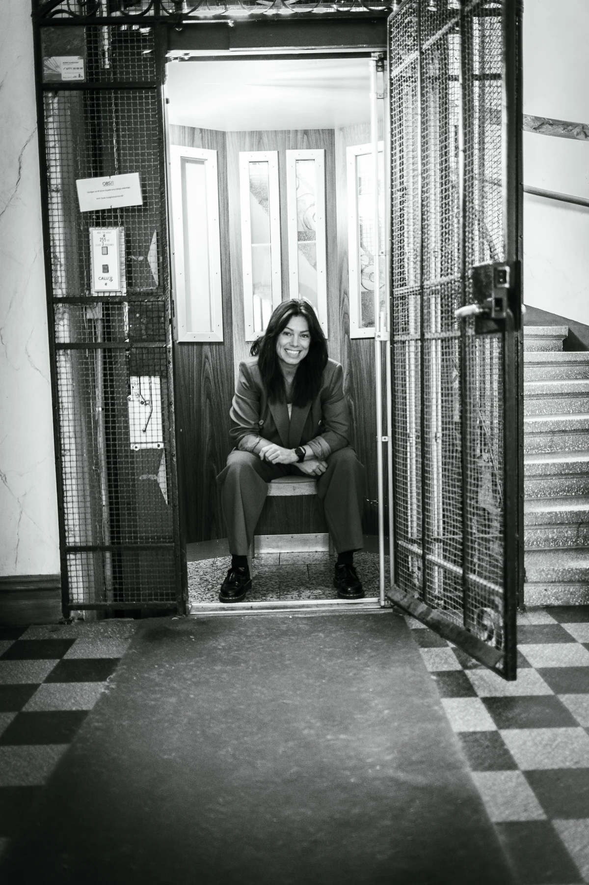

Ett nyfiket öga.
Två hantverk.
Rebecka Widar, certifierad inredare och florist med gesällbrev.

Färg och form
som känns.
Palett är mötet mellan inredning och floristiskt hantverk. En studio för miljöer med personlighet.
Rebeckas erfarenhet av växter och blommor finns med i arbetet med hem, kontor och andra miljöer. Möbler, belysning och kulörer knyts ihop med det levande.
Nyfikenheten har också lett till tävlingar inom blomsterbinderi och medverkan i tv, radio och tidningar. Genom kurser och workshops delar hon med sig av arbetssätt och idéer.
Se kurser och workshopsVad längtar ditt rum efter?
Berätta om dina idéer. Vi börjar med ett samtal om vad som skulle göra skillnad för dig.